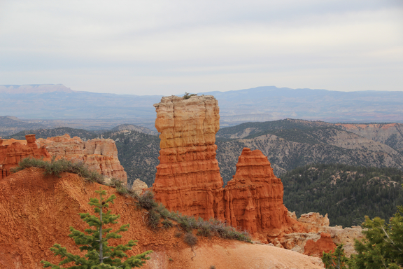
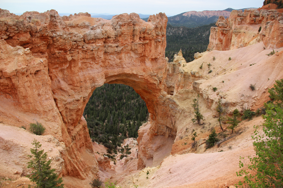
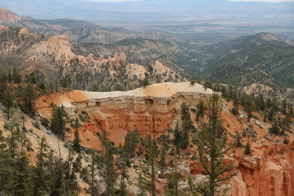
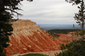
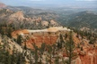
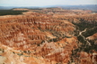

Bryce Canyon
[Images]
[Links]
[Google Map]
The Facts Location Highlights Open |
Ecology
|
Things To Do
|
Images
[Top]
[Links]
[Google Map]
Wall rock formation caused by erosion.
View through the trees.

An arch rock formation.
Table top erosion.
The Cathedral.
- 
- 
- 
Links
[Top]
[Images]
[Google Map]
- For more information, visit:
- The National Park Service
- National Geographic
- For more pictures, visit:
- National Park Photo Gallery
- Campgrounds
Google Map
[Top]
[Images]
[Links]
Bryce Canyon National Park is located in southern Utah.
Visit Google Maps for directions.